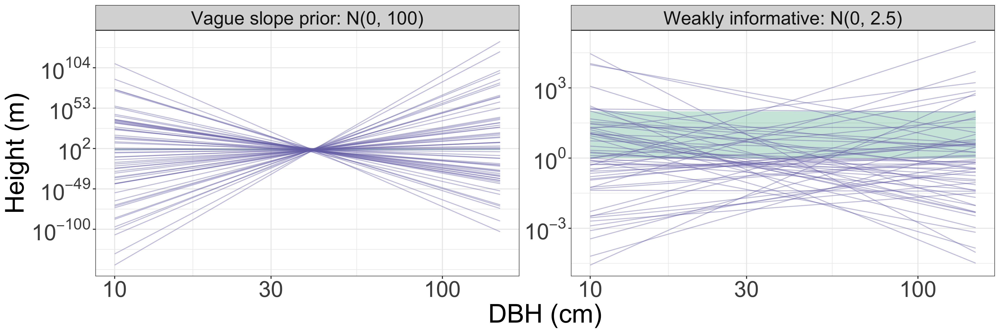
Bayesian statistics for ecology
Day 2: Regression and model checking
🧑🏻💻 Masatoshi Katabuchi @ XTBG, CAS
Yesterday, and today
Day 1
- Posterior \(\propto\) likelihood \(\times\) prior
- The posterior is a distribution. We summarise its draws.
- One parameter: survival probability \(p\)
Today
By the end of today, you can
- read and fit Bayesian linear and logistic regressions;
- report coefficients as distributions;
- make predictions with honest uncertainty;
- check priors, computation, and model fit.
Fitting the model is not the end of the analysis.
Today’s two questions
🌳 How does tree height scale with stem diameter?
- Data: diameter (DBH) and height of 188 trees
- Linear regression
🌱 Do seedlings survive less well where conspecifics are dense?
- Data: survivors in 60 seedling quadrats
- Logistic regression
Both data sets are simulated, so we know the truth and can see whether the model recovers it.
Bayesian linear regression
Tree allometry
Example inspired by Nguyen & Katabuchi Journal of Forestry Research (accepted)
There is a power-law relationship between tree diameter (DBH) and tree height: \(y = ax^b\).
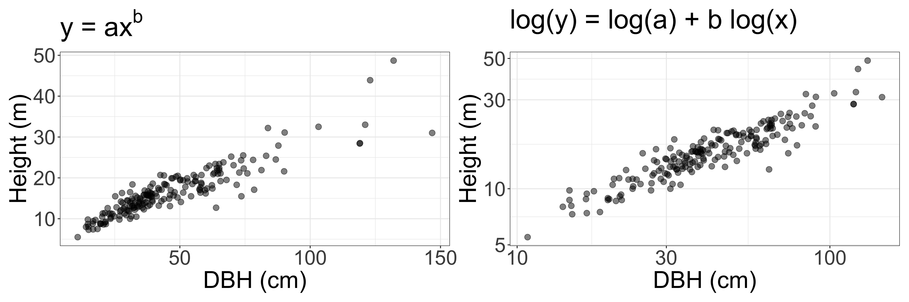
- On the log-log scale the relationship is a straight line: a linear regression.
- \(b\) is the scaling exponent: when DBH increases by 1%, height increases by about \(b\)%.
The model
\[ \log h_i \sim \mathcal{N}(\mu_i, \sigma) \qquad \mu_i = \alpha + \beta \log(\mathrm{DBH}_i / 40) \]
- Likelihood: log height is normally distributed around a line.
- \(\beta\): scaling exponent.
- \(\alpha\): log height of a tree with DBH = 40 cm. So \(e^{\alpha}\) is the typical height (m) of a 40-cm tree.
- Dividing DBH by 40 gives the intercept a meaning. Without it, \(\alpha\) would describe a tree with DBH = 1 cm.
- \(\sigma\): scatter of individual trees around the line (log scale).
Priors
\[ \begin{align*} \alpha &\sim \mathcal{N}(0, 2.5)\\ \beta &\sim \mathcal{N}(0, 2.5)\\ \sigma &\sim \text{Half-}\mathcal{N}(0, 1) \end{align*} \]
Are these reasonable? How would we know?
Priors in ecology: Why scale matters
We often use weakly informative priors in ecology.
- We consider variables x = {-3, …, 3} and y = {-6, …, 4}. We don’t yet know if there is a correlation (y = ax + b).
- However, given the similar scales of x and y, it’s reasonable to guess that a falls within a narrow range (e.g., strongly informative prior: -5 to 5, weakly informative prior: \(a \sim \mathcal{N}(0, 2.5)\)).
- In contrast, a slope like a = 100 (blue line) clearly doesn’t match the data. A vague prior such as \(a \sim \mathcal{N}(0, 10^4)\) says that such slopes are as plausible as a = 2.
Prior predictive check: what trees do the priors expect?
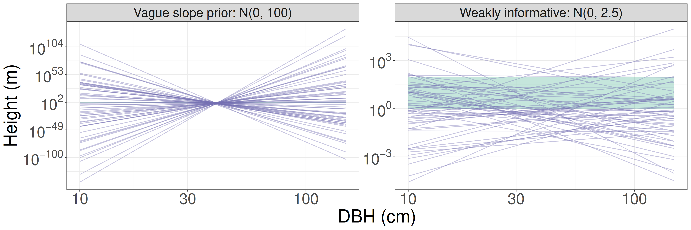
- Each line is one draw from the prior. Green band: heights of real trees (1 to 100 m).
- The vague prior expects trees that are \(10^{50}\) m tall, or \(10^{-50}\) m. It is not “uninformative”: it puts most of its weight on nonsense.
- The weakly informative prior is still generous, but it stays within a few orders of magnitude of reality.
The same model in Stan
data {
int<lower=0> N; // number of observations
vector[N] x; // predictor
vector[N] y; // response
real<lower=0> beta_sd; // prior SD for the slope
}
parameters {
real alpha; // intercept
real beta; // slope
real<lower=0> sigma; // residual SD
}
model {
// likelihood
y ~ normal(alpha + beta * x, sigma);
// priors
alpha ~ normal(0, 2.5);
beta ~ normal(0, beta_sd);
sigma ~ normal(0, 1); // half-normal, because sigma > 0
}\[ \begin{align*} y_i &\sim \mathcal{N}(\alpha + \beta x_i, \sigma)\\ \alpha &\sim \mathcal{N}(0, 2.5)\\ \beta &\sim \mathcal{N}(0, \texttt{beta\_sd})\\ \sigma &\sim \text{Half-}\mathcal{N}(0, 1) \end{align*} \]
- \(y_i = \log h_i\), \(x_i = \log(\mathrm{DBH}_i / 40)\)
- Each line of the
modelblock is one line of the mathematical model. real<lower=0> sigmatogether withnormal(0, 1)gives the half-normal prior.beta_sdis passed as data so that we can change the prior without recompiling.
Coefficients are distributions
| variable | mean | sd | 5% | 95% | rhat | ess_bulk |
|---|---|---|---|---|---|---|
| alpha | 2.732 | 0.010 | 2.716 | 2.749 | 1.002 | 3706 |
| beta | 0.649 | 0.021 | 0.615 | 0.683 | 1.002 | 3632 |
| sigma | 0.135 | 0.007 | 0.124 | 0.147 | 1.001 | 3704 |
- Exponent: 0.65 (90% interval 0.62 to 0.68).
- A 40-cm tree is typically \(e^{\alpha}\) = 15.4 m tall.
- Elastic similarity theory predicts \(\beta = 2/3\). Here \(P(\beta < 2/3 \mid \text{data})\) = 0.8.
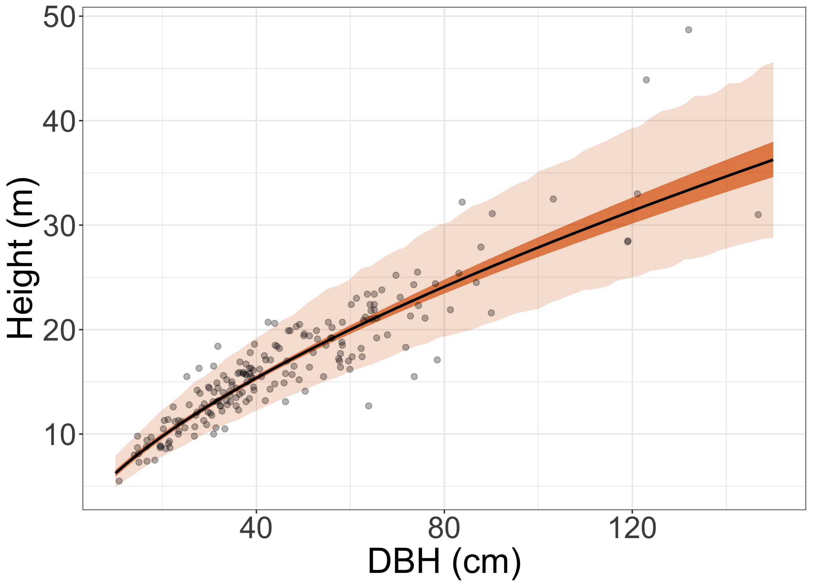
Elastic similarity: McMahon 1973 Science.
Posterior prediction: two kinds of uncertainty
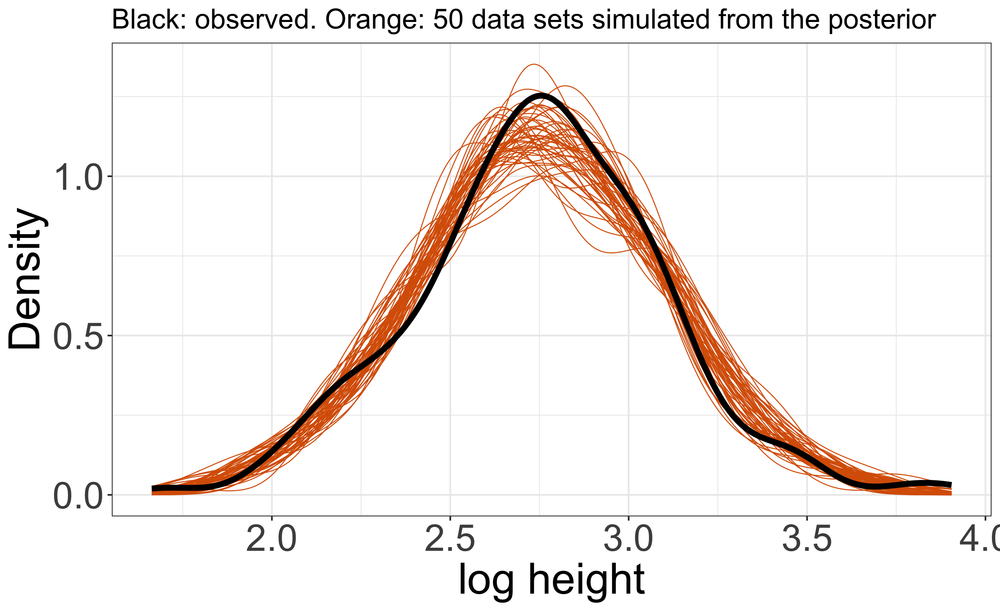
- Dark band: uncertainty about the typical height at each DBH.
- For every draw: \(\mu = \alpha + \beta x\)
- Light band: where we expect a new tree to be.
- For every draw: \(y^{\text{new}} \sim \mathcal{N}(\mu, \sigma)\)
- More data shrink the dark band. They do not shrink the light band much: trees really differ.
- Same idea as predicting the 50 new seedlings on Day 1.
Posterior predictive check
Does the model generate data like ours?
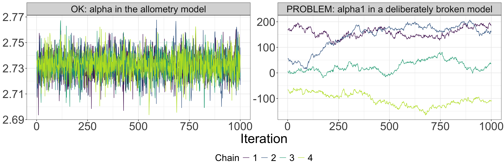
- Take one posterior draw, simulate a complete new data set from the model. Repeat.
- If the model is adequate, the observed data look like one of the simulated data sets.
- A check, not a test: we look for systematic differences that matter for our question.
- Different checks look at different features. We will find a problem with this model at the end of today.
Exercise 2A: tree allometry
day2/exercise.html, Exercise 2A (20 minutes, live sampling)
- Fit the regression and interpret \(\alpha\), \(\beta\), \(\sigma\) in words.
- Is the exponent smaller than 2/3?
- Predict the height of a tree with DBH = 80 cm: the typical tree, and a new tree.
- Check the model against the data.
- Refit with only 10 trees. What changes?
Did the computation work?
Chains should tell the same story
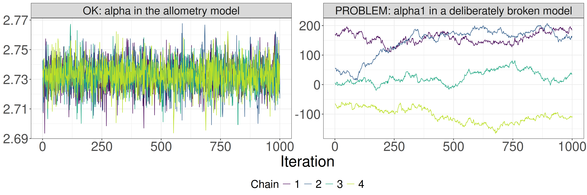
- We run several chains from different starting points (remember the two Metropolis chains on Day 1).
- Good: the chains overlap and look like noise (“fuzzy caterpillar”).
- Bad: chains sit at different values or wander slowly. The draws do not describe the posterior.
Two numbers to check before you interpret anything
rhat: compares variation between chains with variation within chains. Should be close to 1.rhat<= 1.01: good. 1.01 <rhat< 1.1: suspicious.rhat> 1.1: definitely bad.
ess_bulk,ess_tail: effective sample size. Draws within a chain are correlated, so 4000 draws are worth fewer independent draws.ess_bulk(means, medians) andess_tail(interval ends) > 400: good.
- Stan also warns about divergent transitions and maximum treedepth. We meet divergences on Day 3.
- No single diagnostic is enough. Look at all of them, and at the trace plots.
The same two fits in numbers
| fit | variable | mean | sd | rhat | ess_bulk | ess_tail |
|---|---|---|---|---|---|---|
| OK | alpha | 2.73 | 0.010 | 1.00 | 3706 | 2491 |
| OK | beta | 0.65 | 0.021 | 1.00 | 3632 | 2345 |
| OK | sigma | 0.14 | 0.007 | 1.00 | 3704 | 2772 |
| PROBLEM (broken model) | alpha1 | 55.83 | 110.715 | 2.54 | 5 | 12 |
| PROBLEM (broken model) | alpha2 | -53.10 | 110.715 | 2.54 | 5 | 12 |
| PROBLEM (broken model) | beta | 0.65 | 0.020 | 1.31 | 11 | 14 |
| PROBLEM (broken model) | sigma | 0.13 | 0.007 | 1.58 | 7 | 48 |
- OK fit:
rhat= 1.00 and thousands of effective draws for every parameter. - PROBLEM fit:
rhatfar above 1.01 and an effective sample size of about 5. The means and SDs in these rows mean nothing. - In the PROBLEM fit almost every iteration also hit the maximum treedepth.
A warning is information about the model
The broken model has two intercepts:
\[ \mu_i = \alpha_1 + \alpha_2 + \beta x_i \]
- The data inform only the sum \(\alpha_1 + \alpha_2\).
- \(\alpha_1 = 100, \alpha_2 = -97.3\) fits exactly as well as \(\alpha_1 = 2.7, \alpha_2 = 0\).
- Running longer does not help. The model must be fixed.
- This happens in real analyses: e.g., an intercept plus a dummy variable for every site.
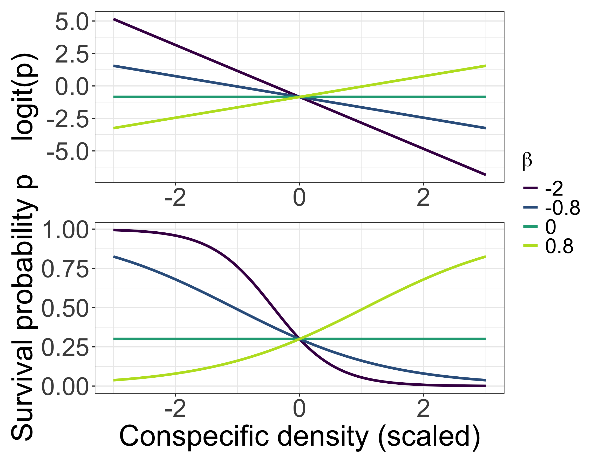
Logistic regression
Back to the question from Day 1

Rare species tend to be rare because they suffer stronger conspecific negative density dependence (NDD) than common species.
- Day 1: one species, one survival probability \(p\).
- Today: within one species, does survival decline where conspecifics are dense?
- Day 3: does it differ among species?
From survival counts to a regression
In quadrat \(i\) we marked \(n_i\) seedlings; \(s_i\) survived.
\[ \begin{align*} s_i &\sim \mathcal{B}(n_i, p_i)\\ \mathrm{logit}(p_i) &= \alpha + \beta\, \mathrm{cons}_i\\ \alpha &\sim \mathcal{N}(0, 2.5)\\ \beta &\sim \mathcal{N}(0, 2.5) \end{align*} \]
- Day 1: one \(p\) for all seedlings. Now \(p_i\) depends on conspecific density (scaled: mean 0, sd 1).
- A probability must stay between 0 and 1, so the line is drawn on the logit scale: \(\mathrm{logit}(p) = \log\frac{p}{1-p}\).
- \(\beta < 0\) means NDD.
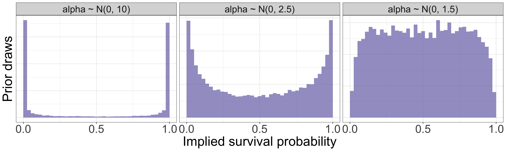
Priors on the logit scale are not intuitive: simulate
- A “vague” \(\mathcal{N}(0, 10)\) prior on the logit scale says: survival is almost certainly near 0% or near 100%.
- \(\mathcal{N}(0, 2.5)\) is weakly informative; \(\mathcal{N}(0, 1.5)\) is roughly flat on the probability scale.
- Relate every prior to the scale of the variable. If you cannot picture it, simulate from it.
Result: interpret on the probability scale
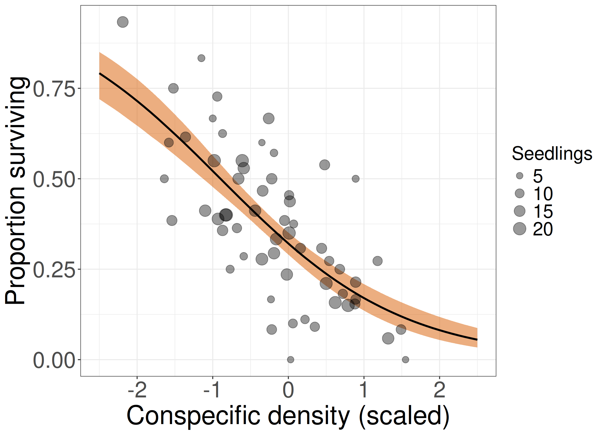
- \(\beta\) = -0.84 (-1.01 to -0.67); \(P(\beta < 0 \mid \text{data})\) = 1
- Logit scale: one SD more conspecifics multiplies the odds of survival by \(e^{\beta}\) = 0.44 (0.36 to 0.51).
- Probability scale (compute for every draw, then summarise):
- low density (−1 SD): 0.52 (0.48 to 0.56)
- high density (+1 SD): 0.17 (0.14 to 0.21)
- difference: -0.35 (-0.41 to -0.29)
- The effect on the probability scale depends on where you start. Always say at which values you compare.
Mean (90% interval). True values used in the simulation: \(\alpha\) = -0.85, \(\beta\) = -0.8.
Exercise 2B: diagnose, then interpret
day2/exercise.html, Exercise 2B (15 minutes)
- Part 1 (stored result): a colleague’s fit looks strange. Find out what is wrong before reading any estimate.
- Part 2 (live sampling): fit the seedling model. How strong is NDD on the probability scale?
A Bayesian workflow
- Question and model: what is the data-generating story? Which parameters answer the question?
- Priors: relate them to the scale of the variables. Prior predictive check.
- Fit.
- Computation check:
rhat, ESS, warnings, trace plots. Stop here if they fail. - Model check: posterior predictive checks that matter for the question.
- Interpret: distributions of parameters and predictions, on the scale of the data.
Go back to step 1 whenever a check fails.
One more check, and tomorrow’s problem
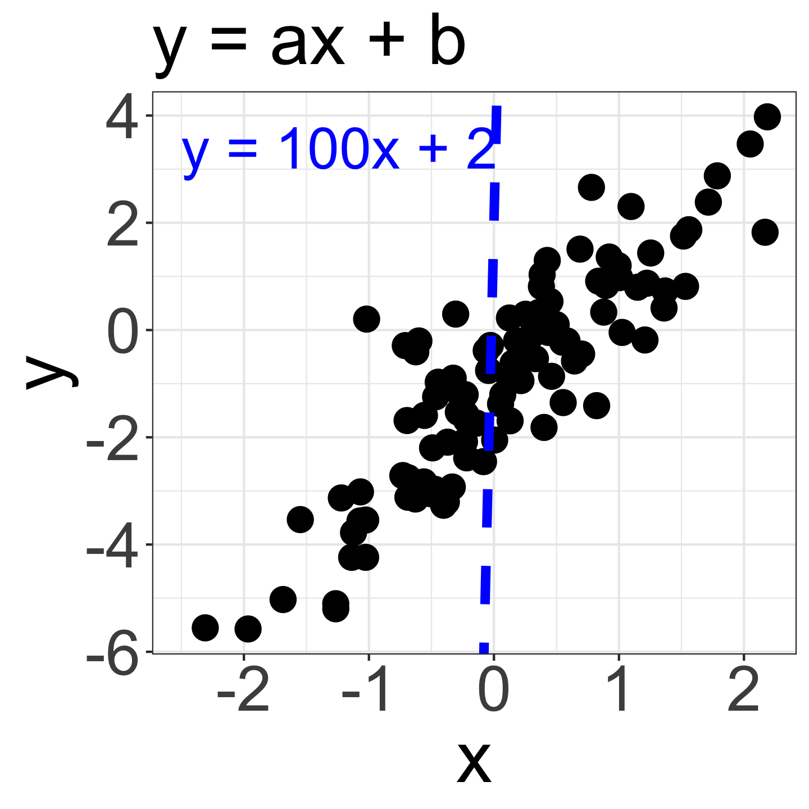
- The 188 trees belong to 10 species.
- Our model assumed one line for all trees. The residuals say otherwise: some species are consistently taller or shorter than predicted.
- Fit each species separately? Some species have only 3 or 4 trees.
- Day 3: hierarchical models learn about each species and about the variation among species.
Appendix: optional material
Count data: the same recipe
\[ \begin{align*} y_i &\sim \text{Poisson}(\lambda)\\ \log \lambda &\sim \mathcal{N}(0, 2.5) \end{align*} \]
- Counts (e.g., number of seedlings per quadrat): Poisson likelihood with a log link.
- Adding a predictor works exactly as in logistic regression: \(\log \lambda_i = \alpha + \beta x_i\).
- Change the likelihood and the link; the workflow stays the same.
The same models with brms
library(brms)
# Tree allometry
brm(
log(h) ~ log(dbh / 40),
family = gaussian(), data = allo,
prior = c(
prior(normal(0, 2.5), class = "Intercept"),
prior(normal(0, 2.5), class = "b"),
prior(normal(0, 1), class = "sigma")
)
)
# Seedling survival
brm(
suv | trials(n) ~ cons,
family = binomial(), data = ndd,
prior = c(
prior(normal(0, 2.5), class = "Intercept"),
prior(normal(0, 2.5), class = "b")
)
)brms writes the Stan code for you. Note that brms places the Intercept prior on the intercept after centring the predictors, so results can differ slightly from our Stan files when a predictor is far from centred.